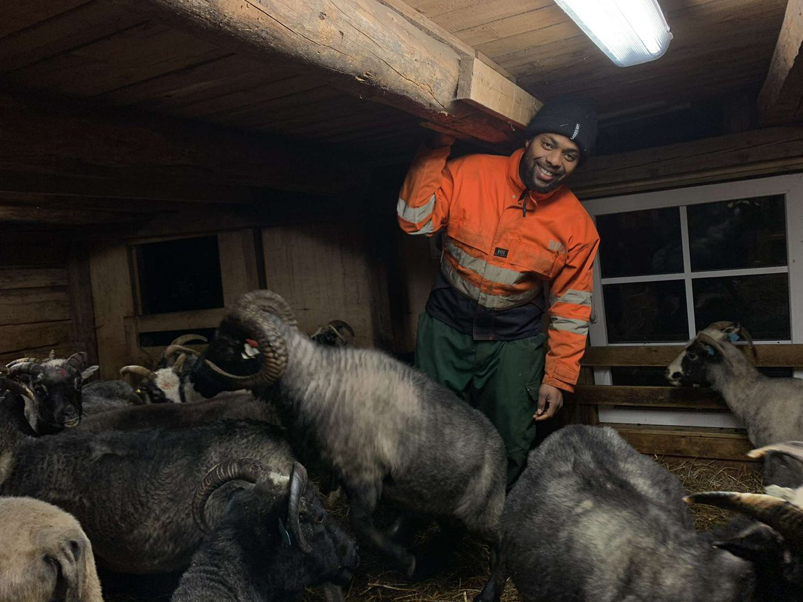
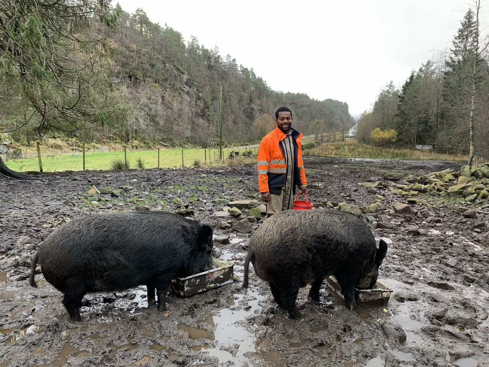
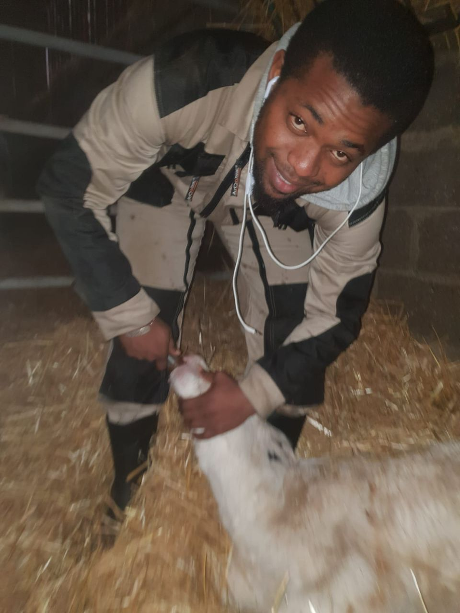
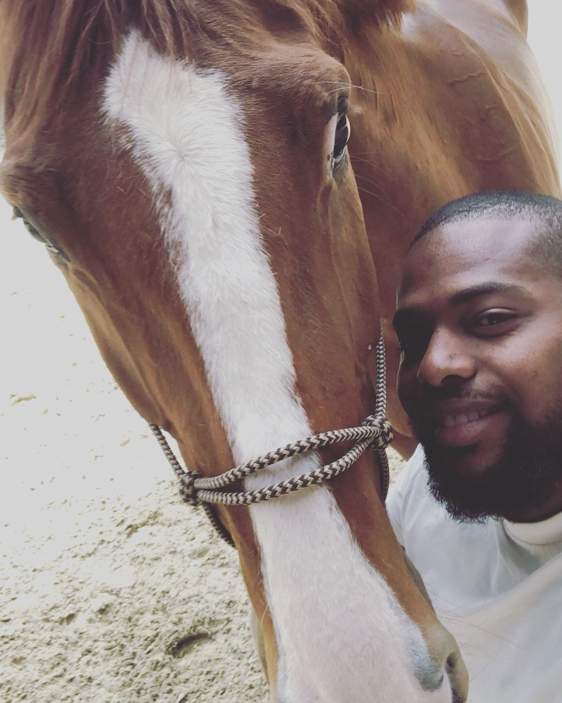

Une relation directe
Nous privilégions la proximité, l’échange et la transparence avec les visiteurs, partenaires et clients.
Une exploitation agricole familiale située à Bamako au Mali, dédiée à la polyculture et à l’élevage. Nous cultivons la terre avec exigence et accompagnons nos animaux avec soin, pour faire vivre une ferme authentique, durable et profondément ancrée dans son territoire.
La Ferme des 4 Saisons est née d’un attachement profond à la terre, au travail bien fait et à l’idée qu’une exploitation agricole doit rester proche du vivant. Au fil du temps, la ferme a grandi avec une ambition simple : produire avec sérieux, élever avec respect et transmettre des valeurs durables.
Cette histoire familiale se construit chaque jour à travers les gestes du terrain, l’attention portée aux animaux, l’entretien des parcelles et la volonté de proposer une agriculture sincère, ancrée dans la réalité.
Aujourd’hui, la ferme continue d’évoluer tout en gardant son identité : une activité agricole authentique, polyvalente et fière de ses racines.


La Ferme des 4 Saisons est une exploitation agricole familiale fondée sur des valeurs simples : le travail bien fait, le respect des animaux, la qualité des cultures et la passion du métier.
Notre activité associe polyculture et élevage afin de proposer une ferme vivante, diversifiée et cohérente, capable d’évoluer avec les saisons et les besoins du terrain.
Ce site vitrine a été repensé pour présenter votre identité de manière plus professionnelle, avec des contenus plus lisibles, une hiérarchie visuelle plus forte et une meilleure cohérence globale.
Des cultures variées selon les saisons et les besoins de l’exploitation.
Des animaux suivis avec attention, constance et respect.
Un savoir-faire agricole porté avec fierté et exigence.
Cette section renforce la crédibilité du site vitrine en expliquant clairement ce qui fait la différence de votre exploitation.
Nous privilégions la proximité, l’échange et la transparence avec les visiteurs, partenaires et clients.
Chaque activité est menée avec attention, dans une logique d’équilibre entre animaux, cultures et environnement.
Notre identité repose sur des valeurs humaines fortes, une vraie implication et un savoir-faire authentique.
Nous mettons en avant une présentation claire, professionnelle et rassurante de notre activité agricole.
Cette section a été réécrite pour ressembler à un vrai site vitrine : les intitulés sont plus professionnels, les fautes ont été corrigées et chaque activité est présentée avec un message clair.
Production de cultures variées au fil des cycles naturels, avec une attention particulière portée à la régularité, à la qualité et au soin des parcelles.
Travail des terres, préparation des parcelles et suivi des productions pour garantir de bonnes conditions agricoles tout au long de l’année.
Conduite d’un élevage associant soin, observation et rigueur, dans une logique de respect du bien-être animal et de valorisation du travail quotidien.
Une approche responsable qui met en avant la qualité, la saisonnalité et les pratiques agricoles durables, au service d’une exploitation cohérente.
Le site met désormais mieux en valeur votre méthode de travail. Cette partie renforce le côté sérieux, structuré et rassurant d’un site vitrine professionnel.
Nous préparons les terres et les espaces d’élevage avec méthode pour garantir les meilleures conditions de travail.
Les cultures sont suivies avec attention et les animaux bénéficient d’un accompagnement quotidien rigoureux.
Nous faisons évoluer notre travail selon les saisons, le climat, les besoins du vivant et les réalités du terrain.
Nous mettons en avant le fruit du travail accompli avec exigence, authenticité et respect des traditions agricoles.
Les cartes produits ont été harmonisées pour éviter les inversions entre images et titres, et pour donner une impression plus fiable.

Des animaux élevés avec attention, patience et présence quotidienne.
ÉlevageUn travail fondé sur l’observation, la confiance et le soin apporté à chaque animal.
Passion animale
Un élevage mené avec constance, dans le respect du bien-être animal et des pratiques agricoles sérieuses.
Élevage ovin
Une relation de proximité et une attention particulière portée au soin, au suivi et à l’environnement.
Soin & présenceDes visuels réels, une mise en page plus dynamique et une présentation plus premium pour valoriser le quotidien de la ferme.




Un site vitrine doit surtout rassurer et permettre à un visiteur de vous joindre facilement. Cette section est donc plus claire et mieux structurée.
Décrivez votre demande. Vous pourrez ensuite connecter ce formulaire à un vrai service d’envoi.
Remplacez ces informations par vos coordonnées réelles pour rendre le site pleinement opérationnel.
La Ferme des 4 Saisons est une exploitation agricole située à Bamako au Mali. Notre activité repose sur la polyculture et l’élevage, avec une approche agricole responsable et un travail quotidien proche de la nature.
Notre ferme participe au développement d’une agriculture locale durable à Bamako, avec une production agricole diversifiée adaptée au territoire.
Nous pratiquons l’élevage avec attention et respect du bien‑être animal, dans le cadre d’une ferme familiale engagée dans son environnement.
Située à Bamako, la ferme s’inscrit dans une dynamique agricole locale visant à valoriser les ressources et les savoir‑faire du Mali.
Nous favorisons les échanges avec les visiteurs, partenaires et acteurs locaux afin de renforcer le lien entre agriculture et territoire.
Cette nouvelle version améliore la lisibilité, corrige les incohérences de contenu, met davantage vos images en valeur et donne au visiteur une impression plus professionnelle.
La Ferme des 4 Saisons s’inscrit dans une agriculture durable à Bamako, en conciliant production agricole, respect de la nature et engagement humain.
Nous cultivons la terre en respectant les cycles naturels et l’équilibre des sols.
Nos animaux sont élevés dans de bonnes conditions avec une présence quotidienne.
Un travail agricole fondé sur l’expérience, l’observation et la transmission.
Une ferme engagée dans le développement agricole de Bamako et du Mali.
La ferme collabore avec des acteurs agricoles locaux, des partenaires et des visiteurs qui partagent les mêmes valeurs.
Partenariats avec des acteurs du secteur agricole.
Échanges et collaborations avec d'autres fermes.
Participation à la dynamique agricole locale.
Accueil et partage autour du monde agricole.
Une section qui peut être utilisée pour partager des moments de la ferme, des récoltes ou des événements agricoles.
Suivi des cultures et entretien des parcelles tout au long de l’année.
Moments du quotidien avec les animaux et l’activité de la ferme.
Les différentes périodes de production agricole selon les saisons.
Les projets et développements de la Ferme des 4 Saisons.